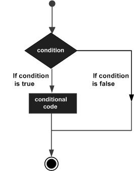
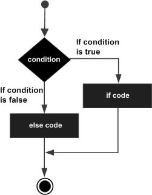
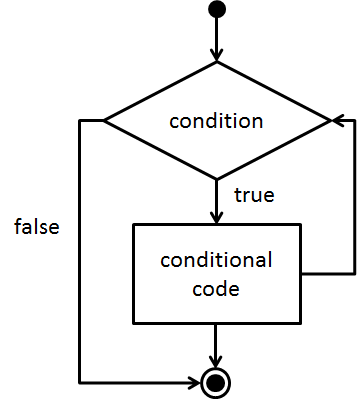

Computer Programming in Python
by Colm Sloan
Control flow
- code is executed top to bottom and left to right
- control the flow of your program
- execute code based on certain conditions
- execute code repeatedly without having to type it out several times
if statement
if some_condition == True:
do_something() # fictional function
- if x then y
- if condition is satisfied then execute effects
- condition is a boolean expression

if statement
if some_condition:
do_something() # fictional function
- don't need to specify == True
if statement
x = 2
y = 3
if x > y:
print(x, "is greater than", y)
- the if boolean expression followed by a boolean followed by colon
- code identation is important
- semantic white space
if statement
x = 2
y = 3
if x > y:
print(x, "is greater than", y)
print("This will also be printed if", x, "is greater than", y)
- all indented code after the colon is part of the if statement
if statement
x = 2
y = 3
if x > y:
print(x, "is greater than", y)
print("This will also be printed if", x, "is greater than", y)
print("This will be printed regardless of the value of x or y")
- statements after the if statement with a lesser indentation are not part of the if statement
if statement
x = 2
y = 3
if x > y:
print(x, "is greater than", y)
print("This will also be printed if", x, "is greater than", y)
if x < y:
print(x, "is less than", y)
if x == y:
print(x, "is the same as", y)
print("This will be printed regardless of the value of x or y")
- we can have as many if statements as we like
if statement
x = 6
y = 3
if x > y:
print(x, "is greater than", y)
print("This will also be printed if", x, "is greater than", y)
if x / y == 2:
print(x, "is twice the value of", y)
print("This will be printed regardless of the value of x or y")
- any code can be inside if statement
- even another if statement (ad infinitum)
- dependent code maintains idented vertical alignment
if statement
x = 6
y = 3
if x > y:
print(x, "is greater than", y)
if x / y == 2:
print(x, "is twice the value of", y)
print("This will also be printed if", x, "is greater than", y)
print("This will be printed regardless of the value of x or y")
- remember, indentation denotes if statement belonging
- position does not indicate if statement belonging
if ... else
if some_condition:
do_something()
else:
do_something_else_instead()
- must be part of an if statement
- will be executed when the if statement condition is not satisfied

if ... else
knight_strength = 20
enemy_strength = 50
if knight_strength > enemy_strength:
print("The knight fights its enemy!")
else:
print("The knight flees from combat!")
- will be executed when the if statement condition is not satisfied
- else must be part of an if statement
- must have same indentation as if statement it belongs to
- requires no boolean expression
if ... else
x = 2
y = 3
if x > y:
print(x, "is greater than", y)
else:
print(x, "is not greater than", y)
- the else clause will be executed because the if condition is not satisfied
if ... else
user_input = int(input("Enter an integer value: "))
if user_input % 2 == 0:
print(user_input, "is an even number")
else:
print(user_input, "is an odd number")
- remember that the other Boolean expressions aren't specified with else
else if (elif)
if some_condition:
do_something()
elif some_other_condition1:
do_some_other_thing1()
elif some_other_condition2:
do_some_other_thing2()
- elif is short for else if
- must be part of an if statement
- there can be any number of elif clauses
- like a set of if statements where only the top-most satisfied one is executed
else if (elif)
if some_condition:
do_something()
if some_other_condition1:
do_some_other_thing1()
if some_other_condition2:
do_some_other_thing2()
- different from multiple if statements
- all of these if statements might be activated
else if (elif)
x = 2
y = 3
if x > y:
print(x, "is greater than", y)
elif x < y:
print(x, "is less than", y)
else:
print(x, "is equal to", y)
- elif can also be used with an else
- the else must go at the end of the if statement
- we know that only one of these conditions can be true
Mutating a variable value
running_total1 = 100
print("Running total starts at", running_total1)
running_total2 = running_total1 + 5
print("Running total after adding 5 is", running_total2)
running_total3 = running_total2 - 3
print("Running total after subtracting 3 is", running_total3)
running_total4 = running_total3 / 2
print("Running total after dividing by 2 is", running_total4)
running_total5 = running_total4 * 4
print("Running total after multiplying by 4 is", running_total5)
- creating many variables can be a pain and reduce code readability
Mutating a variable value
running_total = 100
print("Running total starts at", running_total)
running_total = running_total + 5
print("Running total after adding 5 is", running_total)
running_total = running_total - 3
print("Running total after subtracting 3 is", running_total)
running_total = running_total / 2
print("Running total after dividing by 2 is", running_total)
running_total = running_total * 4
print("Running total after multiplying by 4 is", running_total)
- existing variable values can be mutated
- running_total on the right hand side of = will hold the current value
- the right side is evaluated first
- the result is assigned to running_total
Mutating a variable value
running_total = 100
print("Running total starts at", running_total)
running_total += 5
print("Running total after adding 5 is", running_total)
running_total -= 3
print("Running total after subtracting 3 is", running_total)
running_total /= 2
print("Running total after dividing by 2 is", running_total)
running_total *= 4
print("Running total after multiplying by 4 is", running_total)
- there are several mutation operators
- variable must have initial value before applying a mutation operator to it
- running_total = running_total + 5 is the same running_total += 5
- prefer the shorter and more readable version
While loop
- an if statement that will keep executing until the boolean condition is no longer satisfied
- useful for executing a code block multiple times in succession

Stages of while loop loop
while guard_condition:
execute_while_guard_is_true()
# some code after the while loop
- guard condition evaluated
- if guard condition is true, goto step 3, otherwise, goto step 5
- execute code inside the while loop
- goto step 2
- execute whatever code comes after loop
Stages of while loop
- initialize values of variables
- place guard on loop
- develop body of loop - do work we want
- progress toward termination
While loop
i = 0 # initialize values of variables
while i < 5: # place guard on loop
print("i is", i) # develop body of loop (do work)
i += 1 # progress toward termination
- same style as if statement
- keyword, boolean expression, colon, identation
- what will be the output?
While loop
i = 0 # initialize values of variables
while i < 5: # place guard on loop
print("i is", i ) # develop body of loop (do work)
- make sure to include a reachable termination condition
- beware of infinite loops
While loop
while True: # run until shutdown
run_important_task()
- sometimes infinite loops are desirable
While loop
num_pizza_slices = 8
print("The pizza starts with", num_pizza_slices, "slices.")
while num_pizza_slices > 0:
if num_pizza_slices == 1:
print("The pizza is almost gone!")
num_pizza_slices -= 1
print("Someone ate a slice of pizza!")
print("There are", num_pizza_slices, "slices left.")
print("All of the pizza is eaten!")
- there can be if statements inside while loops and while statements inside if statements
While loop
# age adding program
sentinel = -1
sum = 0
user_input = 0
while user_input != sentinel:
user_input = input("Enter a positive number for an age or -1 to quit: ")
user_input = int(user_input)
if user_input > 0:
sum += user_input
print("The sum of the ages entered is", sum)
- a sentinel is a special value used to guarantee the possible termination of a loop
- it is useful when the number of inputs isn’t known in advance
- not as useful in Python as in older languages
- keep presenting user with input query until they enter exit criteria
- e.g. continue adding numbers until the sentinel value is entered
Iterables
- a collection containing a number of elements (items)
- elements can be processed individually
- strings are iterables because they are a collection of letters
- one other iterable well consider is the list
Lists (briefly)
x = [3, "apples", "cats", 4.91, "apples"]
print(x) # [3, 'apples', 'cats', 4.91, 'apples']
- a collection of ordered objects of any type
- can be of any length, including empty
- can contain duplicates
- contained within square brackets
- elements are separated by commas
For loop
for temp_variable in some_collection:
do_something()
#some code after the for loop
- temporary variable assigned value of next element in iterable
- if the element exists, goto step 3, else goto step 5
- execute indented code inside for
- goto step 1
- terminate loop
Why use for loops?
- use for loops when it is known how many iterations should occur
- use while loops when it isn’t known how many loops will occur
- for loops are preferred to while loops because
- they make it harder to accidentally create an infinite loop
- they are often more readable
For loop
some_collection = [3, "apples", "cats", 4.91, "apples"]
for element in some_collection:
print(element)
- for each element in the list, print it
For loop
ages = [13, 24, 12, 8, 31, 34]
for age in ages:
if age < 18:
print(age, "is less than 18")
- only print the numbers in the list that are more than 18
For loop
sentence = "Be the change you want to see in the world."
for letter in sentence:
print(letter)
range function
# range(start, stop, step)
range(0, 10, 3) # [0, 3, 6, 9]
- returns a list of numbers from start to stop by step
- starts at the first input inclusive, goes up to, but does not include second
- very useful for iteration (repeatedly performing something)
range function
# range(start, stop, step)
range(0, 10, 3) # [0, 3, 6, 9]
# range(start, stop, 1)
range(5, 10) # [5, 6, 7, 8, 9] (step of 1 is implicit)
# range(0, stop, 1)
range(3) # [0, 1, 2] (start at 0 and step of 1 are implicit)
- some functions have an optional number of inputs
- the range function can be called with one, two, or three inputs
- first argument is always the first element in the list - mandatory
- second argument is never included in the list - optional
- third argument is the step size - optional
For loop
for i in range(0, 10, 2):
print(i) # [0, 2, 4, 6, 8]
- print every number from 0 to 8 in increments of 2
- i is traditionally the iterable variable name
For loop
for i in range(10, 0, -1):
print(i) # [10, 9, 8, 7, 6, 5, 4, 3, 2, 1]
- print every number from 10 to 1 in increments of -1
Logical operators
- operations with boolean inputs that give a boolean output
- e.g. True and False, False or True, not True
- Python has the following boolean operators
| name | operation | description |
|---|
| not | negation | flip the input |
| and | conjunction | are both inputs True? |
| or | disjunction | is at least one input True? |
not logical operator
p = False
print(not p)
- if the input is true, the output is false
- if the input is false, the output is true
| p | not p |
|---|
| False | True |
| True | False |
not logical operator
age = 92
is_oap = age >= 65
if not is_oap:
print("You have to pay the bus fare.")
else:
print("No fare necessary.")
and boolean operator
p = False
q = False
print(p, "and", q, "is", p and q) # False
p = False
q = True
print(p, "and", q, "is", p and q) # False
p = True
q = False
print(p, "and", q, "is", p and q) # False
p = True
q = True
print(p, "and", q, "is", p and q) # True
- both inputs must be True to return True
- all other situations return False
| p | q | p and q |
|---|
| False | False | False |
| False | True | False |
| True | False | False |
| True | True | True |
and boolean operator
grade = int(input("Enter grade: "))
if grade >= 50 and grade <= 100:
print("You passed")
elif grade >= 0 and grade < 50:
print("You failed")
else:
print("You entered an invalid grade")
or boolean operator
p = False
q = False
print(p, "or", q, "is", p or q) # False
p = False
q = True
print(p, "or", q, "is", p or q) # True
p = True
q = False
print(p, "or", q, "is", p or q) # True
p = True
q = True
print(p, "or", q, "is", p or q) # True
- at least one input must be True to return True
- returns False if both inputs are False
| p | q | p or q |
|---|
| False | False | False |
| False | True | True |
| True | False | True |
| True | True | True |
or boolean operator
heavy_rain = True
icy = False
if heavy_rain or icy:
print("Stay inside")
else:
print("Go out to play")
truth table exercise
Create a truth table showing logical possibilities for a set of propositions, p, q, not p, not q, p or q, not p or q, p or not q, not p or not q.
break
sentinel = "exit"
sum = 0
while True: # loop forever
user_input = input("Enter a number to be added to the sum or 'exit' to exit: ")
if user_input == sentinel:
break # break out of loop
user_input = float(user_input)
sum += user_input
print("The sum of the numbers entered is", sum)
- a sentinel being implemented via the break keyword
- executing break exits the immediate loop in which it is executed
continue
num_houses_on_street = 15
house_number_with_dog = 13
current_mailman_house_number = 10
while current_mailman_house_number <= num_houses_on_street:
print("Delivering mail to house number", current_mailman_house_number)
if current_mailman_house_number == house_number_with_dog:
print("Running away from dog!")
current_mailman_house_number += 1 # next house
continue
print("Mail sucessfully delivered.")
current_mailman_house_number += 1 # next house
- the continue keyword causes the program to go back to the beginning of the while loop
continue
name = "Colm Sloan"
for letter in name:
if letter == "o":
continue
print(letter)
- break and continue work on for loop too
if statement exercise 1
Output, "You got an A", if the tested variable is greater than or equal to 90.
if statement exercise 2
Have the user describe the weather using one word. If the user enters "raining", output, "Bring an umbrella.".
if statement exercise 3
Tell the user if their input is a multiple of 5 and if their input is a multiple of 6. e.g. inputting 30 would output, "30 is a multiple of 5. 30 is a multiple of 6."
if statement exercise 4
Write a grading program that will output, "You passed", if the user input a value greater than or equal to 50. Otherwise, output, "You failed".
if statement exercise 5
Ask the user to enter an even number less than 100. If the entered number is even and is less than 100, output "Success", otherwise, output, "Failure". Do this using a nested if statement.
if statement exercise 6
Write a grading program that will output an appropriate grade for each of the following situations:
| output | condition |
|---|
| You got an A | grade greater than or equal to 90 |
| You got an B | grade from 80 to 89 |
| You got an C | grade from 70 to 79 |
| You got an D | grade from 60 to 69 |
| You got an F | grade less than 60 |
Don't use logical operators
While loop exercise 1
Print the multiples of 5 from 0 to 100. e.g. 0, 5, 10, 15, ..., 100.
While loop exercise 2
Print the even numbers from 0 to 10 that are evenly divisible by 4.
While loop exercise 3
Use a while loop to take 3 numeric inputs from the user and outputs their sum.
While loop exercise 4
Keep taking numbers from the user until the sum of those numbers is greater than 20. Output the final sum.
While loop exercise 5
Take numbers from the user until they enter "exit". After this, print the average of the numbers they entered. The formula for calculating the average is: average = sum of inputs / number of inputs
While loop exercise 6
The user must guess the secret number of your choosing. Ask the user to input a number from 1 to 10 as their guess. If they guessed incorrectly, tell them they are wrong. If they guessed correctly, tell them they are right and end the loop.
For loop exercise 1
Use a for loop to output the sum of the numbers from 1 to 10.
For loop exercise 2
Use a for loop to take five integers from a user. Display the running and final sum of these integers.
For loop exercise 3
Take an integer from a user. Using a for loop, tell the user which numbers from 2 to 10 that the integer can evenly be divided by.
For loop exercise 4
Ask the user to input the starting value, the ending value and the step value of a range. Output the average of the values in that user specified range.
Logical operator exercise
Ask a user for their age until they give a valid age. Inform the user that their input is invalid if input is less than 4 or greater than 120. Otherwise, inform the user they are too young if under 18 and welcome them for any other age.
If you've finished everything